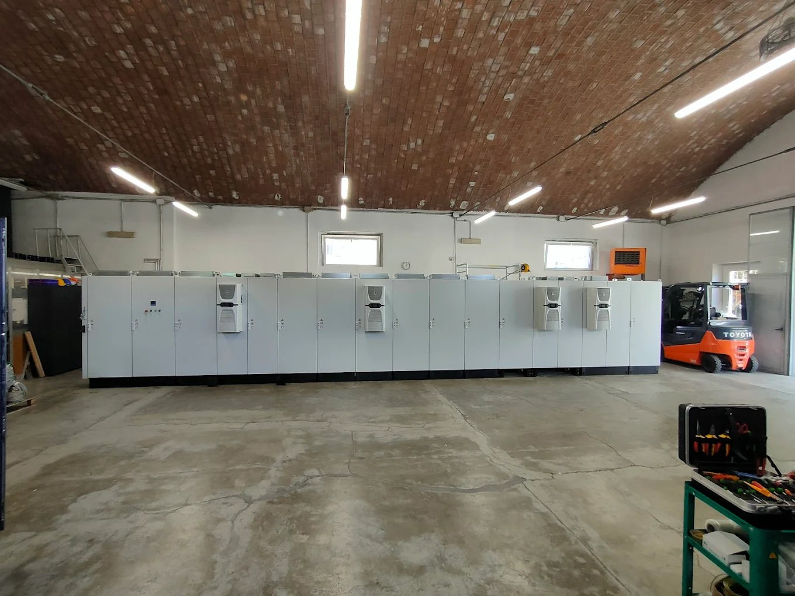

Radici familiari, metodo industriale. Una realtà nata a Farini, nell’Appennino piacentino, e cresciuta nel settore degli impianti elettrici industriali e dei quadri elettrici.
B.G.R. Impianti unisce una storia familiare radicata nel territorio a un approccio tecnico, preciso e organizzato. L’azienda lavora per imprese, stabilimenti produttivi e contesti industriali che richiedono affidabilità, continuità e cura esecutiva.
Le origini dell’azienda sono legate all’esperienza di Ernesto Boiardi, fondatore e figura storica di una cultura professionale costruita sul campo: serietà, responsabilità e attenzione al lavoro ben fatto.
Oggi l’attività prosegue con Riccardo Boiardi, socio e titolare, e con il socio operativo Girola, che contribuisce alla continuità tecnica e organizzativa della realtà aziendale.
Riccardo segue direttamente rapporti con i clienti, sopralluoghi, preventivi, organizzazione delle commesse, coordinamento operativo e controllo della qualità del lavoro eseguito.
B.G.R. Impianti opera principalmente nell’ambito degli impianti elettrici industriali e dei quadri elettrici, seguendo interventi che richiedono ordine, sicurezza, metodo e capacità di adattarsi alle esigenze specifiche del cliente.
Ogni commessa viene affrontata con un approccio concreto: analisi delle necessità, valutazione tecnica, pianificazione dell’intervento, esecuzione accurata e attenzione alla continuità dell’impianto.
La dimensione familiare non significa improvvisazione. Significa presenza, cura del dettaglio, conoscenza diretta dei lavori e responsabilità verso il risultato finale.

Il legame con Farini e con l’Appennino piacentino è parte dell’identità aziendale. Per B.G.R. Impianti significa rispetto per il lavoro, attenzione alle persone e volontà di creare opportunità professionali anche in un territorio di montagna.
L’azienda porta questa cultura del lavoro preciso e affidabile in contesti produttivi e commerciali più ampi, operando principalmente tra Piacenza, Emilia-Romagna e Lombardia.
Nel settore elettrico industriale la qualità si vede nei dettagli: un quadro ordinato, un cablaggio pulito, un impianto leggibile, sicuro e pensato per durare.
Ordine, pulizia, leggibilità e controllo sono parte del lavoro tecnico, non dettagli secondari.
Per un’azienda, un impianto elettrico è parte della continuità operativa. Va realizzato con responsabilità e competenza pratica.
Il cliente si confronta con persone che conoscono il lavoro, seguono le fasi operative e si assumono la responsabilità del risultato.
Una storia nata nell’Appennino piacentino, con una cultura del lavoro serio e ben eseguito portata dentro contesti industriali.
Per impianti elettrici industriali, quadri elettrici o interventi tecnici, contatta B.G.R. Impianti.